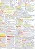
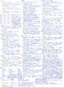
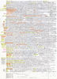
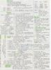
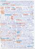
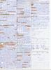

|
|
Verteilte Systeme bzw. verteilte Architekturen sind Zusammenschlüsse mehrerer unabhängiger Computer, die über ein Netzwerk miteinander kommunizieren. Es existieren verschiedene Architekturen verteilter Systeme in der Informatik. Neben der bekannten Architektur, dem Client-Server-Modell, existieren ganz besonders im Umfeld des Parallelrechnens u.a. Cluster-Computing, Grid-Computing, Peer-to-Peer (P2P) und Cloud-Computing.
Cloud-Computing hat das Potential, den Charakter der Informationstechnik (IT) fundamental zu verändern. Die Konsolidierung der Rechen- und Speicherressourcen in großen Rechen- bzw. Ressourcenzentren bietet die Möglichkeit, Mittel, die bisher der Aufrechterhaltung des Ressourcenbetriebs dienten, in andere Aufgaben fließen zu lassen. Gleichzeitig haben die Anwender in der Cloud große Freiheiten bzgl. der Infrastrukturen, Betriebssysteme, Programmiersprachen und Anwendungen, die sie verwenden möchten.
Das Ziel dieser Vorlesung ist die Vermittlung der Grundlagen von Cluster-Computing, Grid-Computing, Peer-to-Peer (P2P) und ganz besonders von Cloud-Computing.
|
Aktualisierte und verbesserte Vorlesungsunterlagen befinden sich auf der Seite Distributed Systems / Verteilte Systeme im SS2014. |
| Foliensatz 1 | Organisatorisches, Einführung, Client-Server |
| Foliensatz 2 | Grundlagen, Gesetze und Einschränkungen, Parallelrechner |
| Foliensatz 3 | Cloud-Computing, Dienste und Konzepte, Chancen und Risiken |
| Foliensatz 4 | Amazon Web Services (EC2, EBS, ELB), Google Compute Engine, HP Cloud Compute |
| Foliensatz 5 | Amazon Web Services (S3) und Google Cloud Storage |
| Foliensatz 6 | Platform Services (Google App Engine) |
| Foliensatz 7 | Private Infrastrukturdienste (IaaS), Private Plattformdienste (PaaS) |
| Foliensatz 8 | Cluster-Computing |
| Foliensatz 9 | Peer-to-Peer |
| Foliensatz 10 | Web Services |
| Abschlussklausur | (21.03.2014) | Bearbeitungszeit: 60 Minuten | ||
| Musterlösung | (21.03.2014) | |||
| Ergebnis der Klausur |
| Klausur | Bearbeitungszeit | Hochschule | Musterlösung | |||
| WS1314 | 90 Minuten | FH Frankfurt am Main | ||||
| WS1112 | 60 Minuten | HS Mannheim | Musterlösung | |||
| SS2011 | 60 Minuten | HS Mannheim | Musterlösung | |||
| WS1011 | 60 Minuten | HS Mannheim | Musterlösung | |||
| SS2010 | 60 Minuten | HS Mannheim | Musterlösung |
| Ergebnis der Vorlesungsevaluation |
Als Hilfsmittel durften die Studenten ein selbständig vorbereitetes DIN-A4-Blatt mit in die Klausur mitnehmen. Nur und handschriftlich beschriebenes Originale waren zugelassen und keine Kopien. Diese Seite enthält eine Auswahl der Blätter. Einige sind wahre Kunstwerke.
     Zu erreichen bin ich am besten per E-Mail: christianbaun@gmail.com
|
Prof. Dr. Christian Baun Hochschule Mannheim Fakultät für Informatik Stand: 26.3.2014 |
|
|